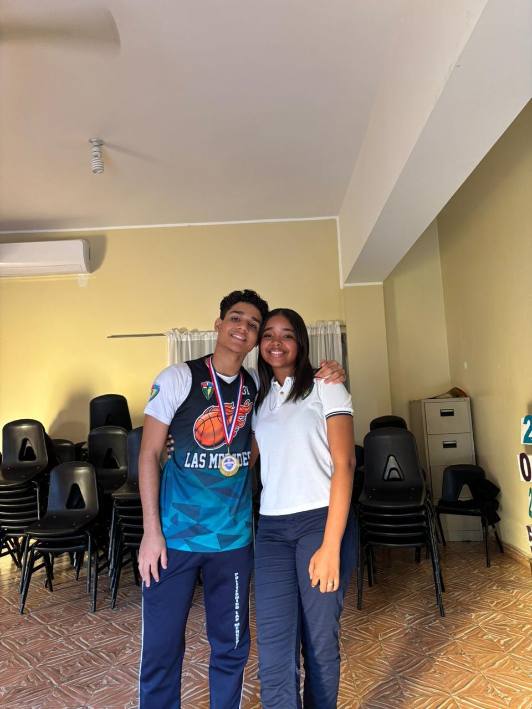
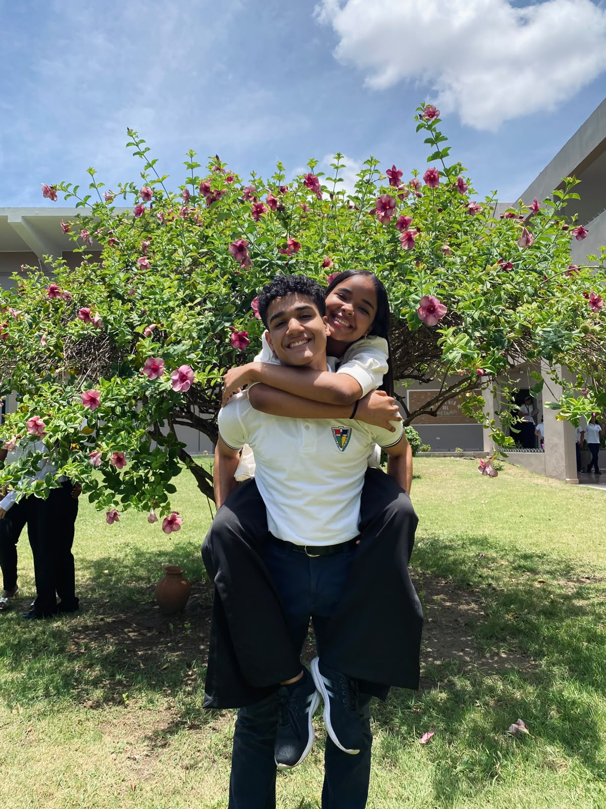
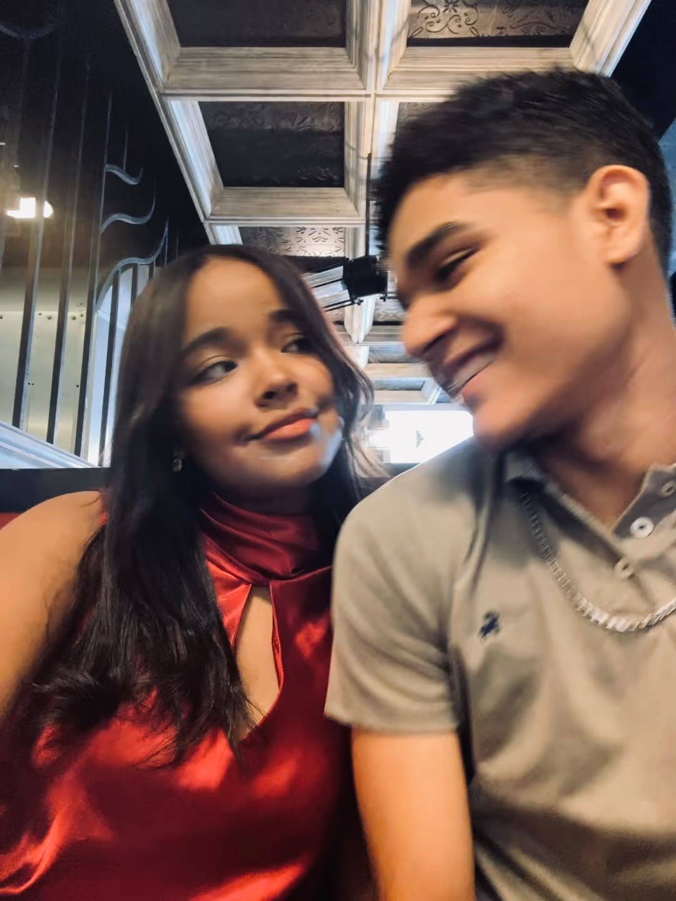
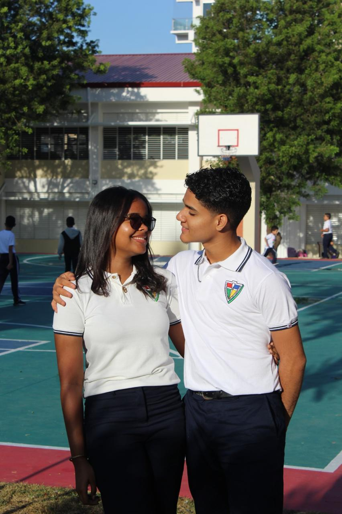

Para el mejor novio del mundo.
Sé que no es mucho, pero hice esto con mucho amor para guardar aunque sea un poquito de todo lo que siento por ti, y todo lo que significas para mí. Espero te guste muto, mi amor: 🤍
Te amo.
Hola mi bebeee.
Felices 9 súper meses juntitos. Recuerdo como hace un año empezamos a hablar por un mensaje que yo no quería enviar, sin embargo, enviarlo fue lo mejor que pude hacer, te conocí y es eso más que suficiente.Hablábamos casualmente, nada fijo. Pero poco a poco nos aceramos más, cada día un poquito más. Recuerdas que nos quedabamos hasta taaarde hablando de cualquier cosa? Me encantaba desvelarme hablando contigo. Poco a poco nos fuimos saludando en el poli, primero eran las miraditas con pequeñas sonrisas, luego los saludos de mano, después nuestro primer abrazo frente al laboratorio 3, y recuerdo como si fuera ayer, un 11/11 antes de entrar al laboratorio de Juanfi, me diste ese primer besito en la mejilla, JAJAJJA, te juro que me quedé con cara de estúpida y toda tiesa, a los poco minutos me enviaste un mensaje diciendo "Espero no haber incomodado, pero igual no me arrepiento" a lo que yo respondí "Nono, para nada" JAJAJAJAJA. Fue el día más feliz de todos.
Desde ese momento, supe que serías tú y solamente tú. Ese 11 de noviembre marcó nuestra rutina diaria, siempre uno o + besitos en las mejillas antes de irnos al acto cívico. Te puedo jurar que el simple hecho de que llegaras a mi vida fue lo mejor que me pudo pasar, y también, que me sigas eligiendo cada día, es lo más bonito que me ha pasado en la vida. No conocía el verdadero signficado del amor hasta que sentí cosas dentro de mí que nunca habia sentido. El 12/11 me dijiste por primera vez que me querías. Y un martes, cuando estaba corrigiendo los trapo de exámenes de ustedes de normalización, antes de irte para el ICA, me dijiste el primer "Te amo" y me dejaste literalmente sin palabras, me sentí súper feliz, y sobre todo, me sentí amada. Ahí entendí que quería estar contigo para siempre, y que no me importaba nada ni nadie más que tú.
Y aunque no tenemos una relación perfecta, y tenemos nuestras altas y bajas, quiero que sepas que me siento la persona más feliz de la bolita del mundo. Me haces sentir amada, me haces sentir especial, me haces sentir que soy la persona más importante del mundo para ti, y eso es lo que más me gusta de nosotros. No importan los problemas, siempre buscaremos la manera de arrgelarlos y aprender de ellos, y como lo prometimos, siempre vamos a estar el uno para el otro y no nos rendiremos nunca. Eres la única persona que me hace sentir viva, que me hace sentir completa, que me deja ser yo sin importar cuán dificil sea, eres la única persona capaz de entenderme y hacerme sentir que todo está bien.
Hoy, hace exactamente 9 meses, me preguntaste que si quería ser tu novia, y yo te dije que sí. Me lo pediste de una forma tan bonita, tan especial, que aun recuerdo que estabas temblando mientras me decias la carta hablada, y yo, aunque ya sabía lo que me ibas a pedir, igualmente estaba súper nerviosa. Tenemos a Jorge y Miles como peluchetestigos de ese momento TAN especial.
Y aunque estas palabras nunca van a ser suficientes para explicarlo todo, quiero que sepas que TE AMO MUCHÍSIMO, MI VIDA. 🤍
El comienzo de nuestro amor oficial, me lo podría tatuar.
Nuestra fecha:
Fotitos de nosotros

First pic 2geter ♡

Ve que cukiii

So cuteeeeeeee

Te amo🤍
¿Sabes algo híper mega importante?
Llegaste al final mi amooooooooor, pero no te preocupes, esto no es el final (de la página si) pero nuestra historia apenas comienza, hay muchas cosas que nos faltan por vivir, y estoy segura de que cada una de ellas será mejor que la anterior.
Con mucho, pero mucho amor,
tu súper monitaaaa 🐒🤍